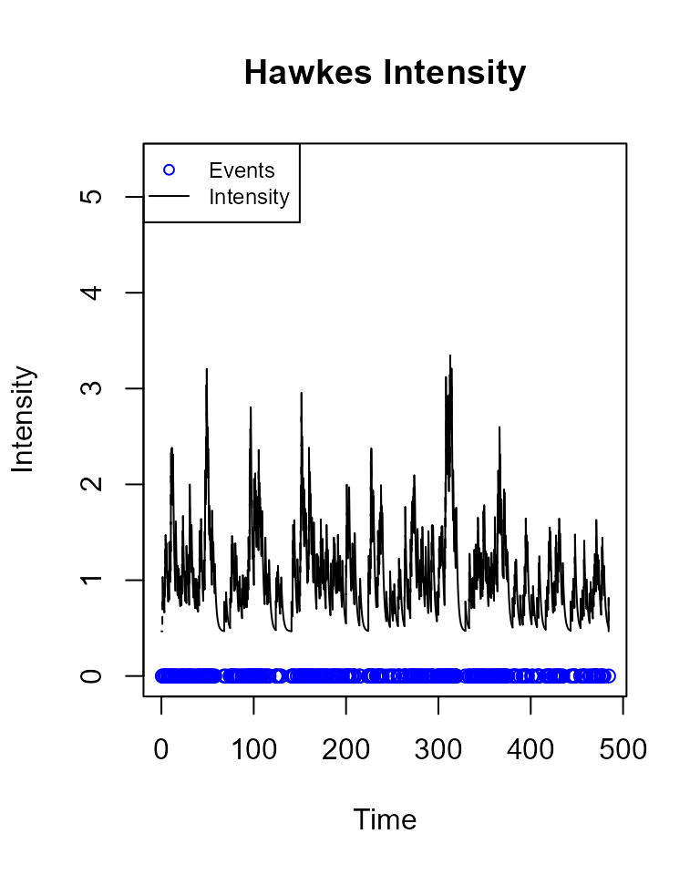
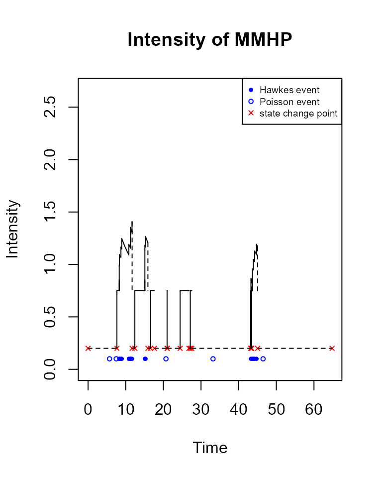
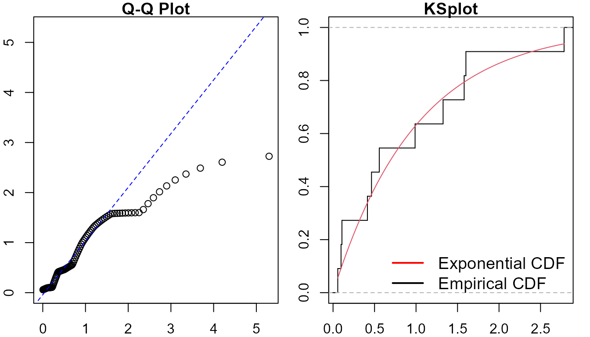
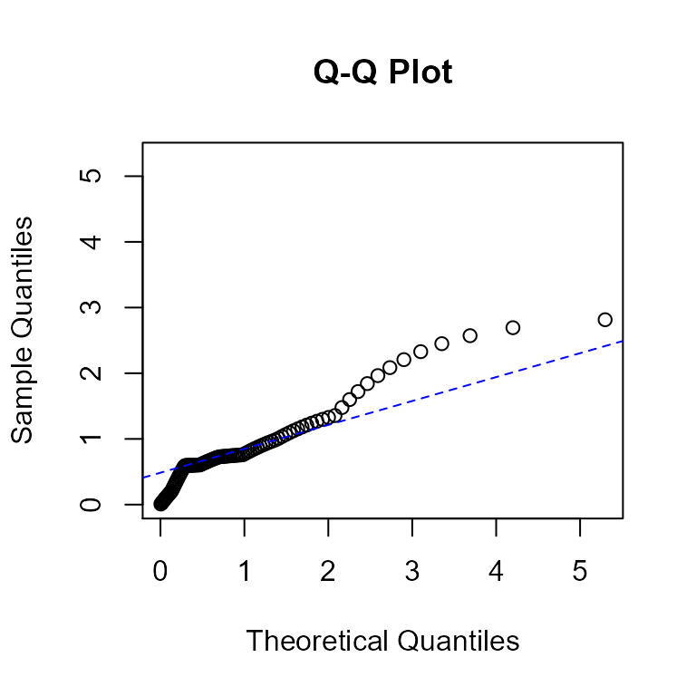
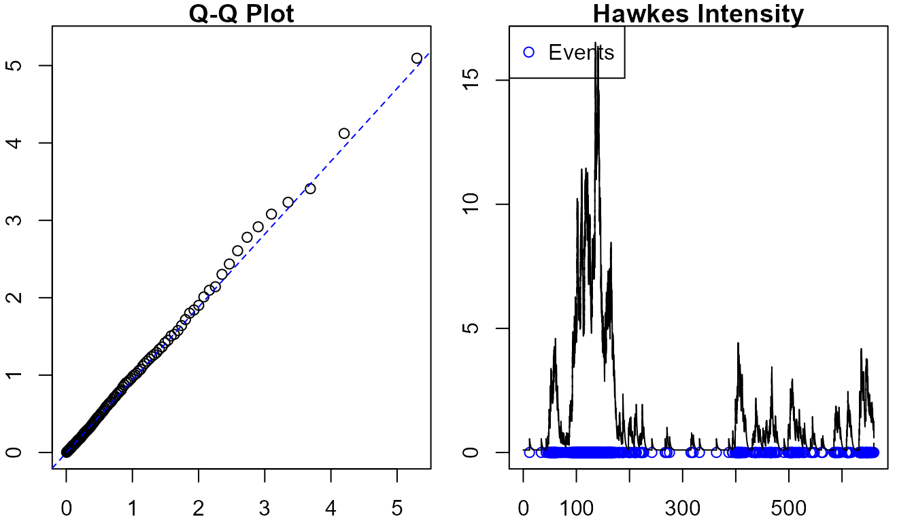
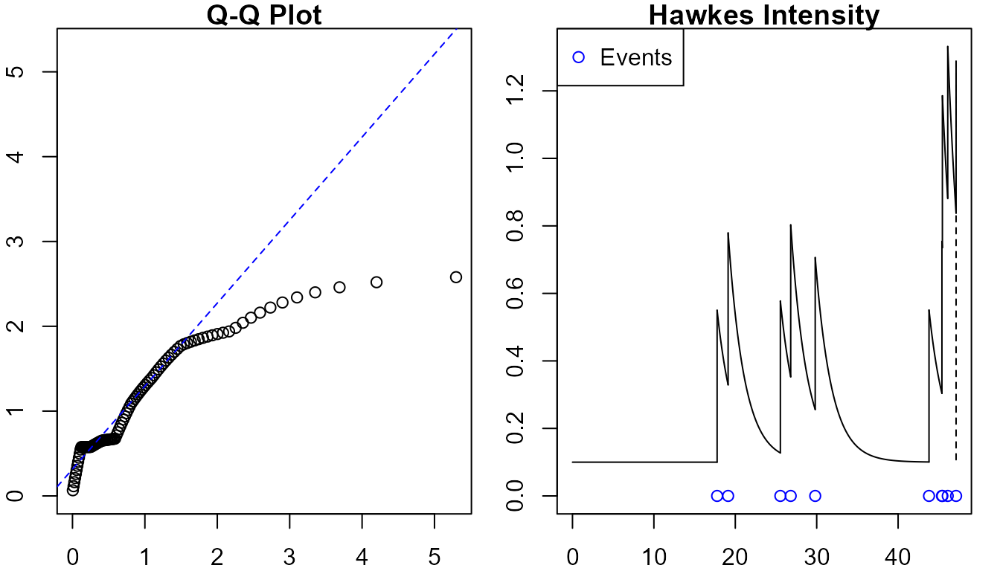

ppdiag, diagnostic tools for temporal Point Processes
Sally Sun, Owen G. Ward et al.
ppdiag.Rmdlibrary(ppdiag)
This vignette provides an introduction to the functions available in ppdiag to evaluate the fit of univariate temporal point processes.
To achieve this, we currently include a range of functions which allow a user to:
- Simulate data from a range of common univariate point processes.
- Fit a range of univariate point processes to data.
- After fitting a point process to some data, evaluate the ability of that point process to capture the temporal structure present in this data.
Classes
- Homogeneous Poisson Process:
hpp(lambda, start=0, end=1, n = NULL) creates an object of a list type in class ‘hpp’.
hpp_obj <- hpp(lambda = 1) hpp_obj #> $lambda #> [1] 1 #> #> $events #> NULL #> #> attr(,"class") #> [1] "hpp"
- Hawkes Process:
hp(lambda0, alpha, beta, events = NULL) creates an object of list type in class ‘hp’.
hp_obj <- hp(lambda0 = 0.1,alpha = 0.45,beta = 0.5) hp_obj #> $lambda0 #> [1] 0.1 #> #> $alpha #> [1] 0.45 #> #> $beta #> [1] 0.5 #> #> $events #> NULL #> #> attr(,"class") #> [1] "hp"
- Markov-Modulated Hawkes Process:
mmhp(lambda0, lambda1, alpha, beta, Q = NULL, delta = NULL, events = NULL) creates an object of type in class ‘mmhp’.
Q <- matrix(c(-0.4, 0.4, 0.2, -0.2), ncol = 2, byrow = TRUE) mmhp_obj <- mmhp(Q, delta = c(1 / 3, 2 / 3), lambda0 = 0.2, lambda1 = .75, alpha = 0.1, beta = 0.2) mmhp_obj #> $Q #> [,1] [,2] #> [1,] -0.4 0.4 #> [2,] 0.2 -0.2 #> #> $delta #> [1] 0.3333333 0.6666667 #> #> $events #> NULL #> #> $lambda0 #> [1] 0.2 #> #> $lambda1 #> [1] 0.75 #> #> $alpha #> [1] 0.1 #> #> $beta #> [1] 0.2 #> #> attr(,"class") #> [1] "mmhp"
Simulating data
Functions for simulating data include simulatehpp, simulatehp, and simulatemmhp, which take in objects of type hpp, hp, and mmhp, respectively, with additional parameters for simulation, and produces a vector of simulated event times.
- Homogeneous Poisson Process:
simulatehpp(hpp) takes a hpp object and returns a vector of event times simulated from the corresponding homogeneous Poisson process.
simulatehpp(hpp, start=0, end, n=NULL) can simulate events up to a specified end time.
hpp_events <- simulatehpp(hpp_obj, end=10) #> Simulating up to endtime. To simulate n events specify n. hpp_events #> [1] 1.178415 2.534481 3.128104 6.003689 6.761803 7.487947 7.695707 8.689093 #> [9] 9.293207
or specify a vector of certain length.
simulatehpp(hpp_obj, end = 10, n = 50) #> 50 events simulated. To simulate up to an endtime set n=NULL. #> [1] 0.4700093 0.5953848 1.8670876 2.7871657 3.0582515 3.4601903 #> [7] 5.0468293 6.0753797 7.0984900 7.4691327 8.0931062 8.4344650 #> [13] 9.0537138 9.3427672 10.2100262 11.9736636 12.2346367 12.3602525 #> [19] 12.9597332 14.2408616 14.9576746 15.0318540 16.0854204 16.1323467 #> [25] 16.4957957 16.6129437 18.3254823 18.7884851 18.7989758 20.8369770 #> [31] 21.9436400 22.0885265 22.3400895 22.5296732 23.0349735 23.7458127 #> [37] 23.9938145 24.1168559 25.6884496 26.8690773 27.9761357 29.5922001 #> [43] 31.0374198 32.3288162 32.8542123 34.2270352 36.3186528 37.7887380 #> [49] 38.3036130 39.8575757
- Hawkes Process:
simulatehp(hp, start = 0, end, history = 0) returns event times simulated from the Hawkes process specified by hp, up to some end time, along with the maximum overall intensity of the Hawkes process given these events.
hp_events <- simulatehp(hp_obj, start = 0, end = 50) #> Simulating up to endtime. To simulate n events specify n. hp_events #> $events #> [1] 7.685149 9.431408 10.816715 11.745095 12.097615 12.934059 12.958696 #> [8] 13.220573 13.345760 14.354421 14.631039 14.887720 15.482096 15.622056 #> [15] 16.241265 17.063702 18.089073 18.241124 18.704229 19.192153 19.554896 #> [22] 19.835786 19.925386 22.286862 22.414699 22.953787 23.253284 25.071080 #> [29] 26.800339 26.941980 27.424358 39.928420 44.344075 44.504103 48.385345 #> #> $lambda.max #> [1] 2.294513
You can also specify desired length of events.
hp_events <- simulatehp(hp_obj, start = 0, end = 50, n=10) #> 10 events simulated. To simulate up to endtime set n=NULL. hp_events #> $events #> [1] 17.76706 19.11747 25.53581 26.80669 29.81610 43.79629 45.38258 45.43959 #> [9] 46.09706 47.12153 #> #> $lambda.max #> [1] 0.8813544
- Markov-Modulated Hawkes Process:
simulatemmhp(mmhp, n = 1, ...) simulates events from a specified Markov Modulated Hawkes process.
mmhp_events <- simulatemmhp(mmhp_obj, n = 50) #> 50 events simulated. To simulate up to endtime set given_states=TRUE and provide states. mmhp_events #> $x #> [1] 0.000000 4.424800 9.831678 11.151297 11.493870 12.427648 15.363831 #> [8] 18.092114 20.121262 21.409784 23.835963 24.520643 26.980388 29.306392 #> [15] 31.335663 31.958737 32.241352 37.325680 38.137633 39.669892 42.440404 #> [22] 42.675769 42.689209 51.574955 52.268967 56.319078 57.018910 66.407441 #> [29] 69.929902 76.177281 79.419928 85.507913 86.597959 90.617908 92.133242 #> [36] 92.672635 93.323573 93.451185 94.144177 95.606790 #> #> $z #> [1] 2 1 2 1 2 1 2 1 2 1 2 1 2 1 2 1 2 1 2 1 2 1 2 1 2 1 2 1 2 1 2 1 2 1 2 1 2 1 #> [39] 2 1 #> #> $events #> [1] 0.000000 3.381999 4.084034 4.681898 5.653357 5.735440 6.689931 #> [8] 6.872769 8.890275 9.765129 13.604649 14.131433 14.277697 15.021687 #> [15] 18.422405 18.789715 23.416703 30.595059 33.732148 37.652385 40.813486 #> [22] 40.946833 41.617853 42.052863 42.257587 49.161570 49.545144 51.894639 #> [29] 53.926264 57.843006 66.888916 68.237094 68.562858 68.825274 69.508258 #> [36] 73.716563 75.749525 77.774495 77.941513 78.760537 78.785592 80.063167 #> [43] 80.178324 91.410444 91.802579 91.970066 92.918357 93.017369 93.253174 #> [50] 93.575872 94.250521 #> #> $zt #> [1] 2 2 2 1 1 1 1 1 1 1 1 1 1 1 1 1 1 1 2 1 1 1 1 1 1 2 2 1 2 2 1 1 1 1 1 2 2 1 #> [39] 1 1 1 2 2 1 1 1 1 1 1 1 2 #> #> $lambda.max #> [1] 1.282239 #> #> $start #> [1] 0 #> #> $end #> [1] 95.60679
Fitting a point process
Functions for fitting objects include fithpp and fithp, which take in event times and produce object of type hpp and hp, respectively.
- Homogeneous Poisson Process:
fithpp(hpp_events) returns an object of class hpp.
fit_hpp <- fithpp(hpp_events) fit_hpp #> $lambda #> [1] 1.109086 #> #> $events #> [1] 1.178415 2.534481 3.128104 6.003689 6.761803 7.487947 7.695707 8.689093 #> [9] 9.293207 #> #> attr(,"class") #> [1] "hpp"
- Hawkes Process:
fithp(vec,t,end) returns an object of class hp, estimating the three parameters of the Hawkes process using optim, with the initial value given by vec. This can be a challenging optimisation problem and convergence is not guaranteed.
init <- rep(0.1,3) fit_hp <- fithp(init, hp_events$events) fit_hp #> $lambda0 #> [1] 0.09975753 #> #> $alpha #> [1] 0.320984 #> #> $beta #> [1] 0.4343498 #> #> $events #> [1] 17.76706 19.11747 25.53581 26.80669 29.81610 43.79629 45.38258 45.43959 #> [9] 46.09706 47.12153 #> #> attr(,"class") #> [1] "hp"
Diagnosing the fit of a point process to data
There are several existing methods which can be used to assess the goodness of fit of a point process to temporal data. In this package we allow a user to:
- Examine the distribution of the rescaled interevent times, by utilising the time rescaling theorem.
- Examine the residual process of an estimated point process, in particular computing the raw and Pearson residuals for a given point process fit to data.
- Visually inspect the estimated intensity of the point process.
Visualize the intensity function
drawHPPIntensity(hpp, events, color = "red", start = 0, end = max(events), fit=FALSE, int_title = "Intensity homogeneous Poisson Process") plots the intensity of a homogeneous poisson process. To plot the events along with intensity, set plot_events=TRUE.
drawHPPIntensity(fit_hpp, events = hpp_events, color = "red", plot_events=TRUE)

To plot the fitted intensity on the inputted events, specify fit=TRUE.
drawHPPIntensity(fit_hpp, events=hp_events$events, color = "red", fit=TRUE, plot_events=TRUE) #> Warning in events == old_events: longer object length is not a multiple of #> shorter object length #> Events in object and events provided don't match. Fitting provided events.

You can also plot the event time counts for the homogeneous poisson process.
plothpp_step(simulatehpp(hpp_obj, end = 10, n=50)) #> 50 events simulated. To simulate up to an endtime set n=NULL.

drawHPIntensity(hp, start = 0, end = max(events), history=0, events, color = 1, i = 1, add=FALSE, fit=FALSE, vec=rep(0.1,3), int_title="Hawkes Intensity") plots the intensity of a hawkes process. To plot the events along with intensity, set plot_events=TRUE.
drawHPIntensity(fit_hp, start = min(hp_events$events), end = max(hp_events$events), history = 0, events = hp_events$events, plot_events = TRUE)
To plot the fitted intensity on the inputted events, set fit=TRUE.
drawHPIntensity(fit_hp, start = min(hp_events$events), end = max(hp_events$events), history = 0, events = hp_events$events, fit=TRUE, plot_events=TRUE)
drawUniMMHPIntensity(mmhp, simulation, add = FALSE, fit=FALSE, color = 1, int_title = "Intensity Plot of MMHP") plots the intensity of a mmhp process.
drawUniMMHPIntensity(mmhp_obj, mmhp_events)

Diagnostics tools of the models
- Homogeneous Poisson Process
diagpp(object, events, pzt = NULL) gives diagnostics of the model, including a qq plot, a ks plot, ks test, raw and pearson residuals in one function.
diagpp(hpp_obj,hpp_events)

#>
#> Raw residual: 9
#> Pearson residual: -0.2932067
#>
#> One-sample Kolmogorov-Smirnov test
#>
#> data: r
#> D = 0.22546, p-value = 0.6711
#> alternative hypothesis: two-sidedrawresidual(object, events, start = min(events),end = max(events)) gives rawresidual only.
rawresidual(hpp_obj,hpp_events) #> [1] 9
pearsonresidual(object, events, start = min(events),end = max(events)) gives pearsonresidual only.
pearsonresidual(hpp_obj,hpp_events) #> [1] -0.2932067
intensityqqplot(object, events) gives both qqplot and intensity plot.
intensityqqplot(hpp_obj, hpp_events) #> Using events provided and not fitting. Set fit=TRUE to fit events.
- Hawkes Process
diagpp(object, events) gives diagnostics of the model, including a qq plot, a ks plot, ks test, raw and pearson residuals in one function.
diagpp(hp_obj,hp_events$events)

#> Raw residual: -1.336609
#> Pearson residual: 3.967234
#>
#> One-sample Kolmogorov-Smirnov test
#>
#> data: r
#> D = 0.33794, p-value = 0.1605
#> alternative hypothesis: two-sidedrawresidual(object, events, start = min(events),end = max(events)) gives rawresidual only.
rawresidual(hp_obj,hp_events$events) #> [1] -1.336609
pearsonresidual(object, events, start = min(events),end = max(events)) gives pearsonresidual only.
pearsonresidual(hp_obj,hp_events$events) #> [1] -1.651203
intensityqqplot(object, events) gives both qqplot and intensity plot.
intensityqqplot(hp_obj, hp_events$events) #> Using events provided and not fitting. Set fit=TRUE to fit events.

MMHP
diagpp(mmhp_obj,mmhp_events$events)
#> Raw residual: 18.00889
#> Pearson residual: 22.23203
#>
#> One-sample Kolmogorov-Smirnov test
#>
#> data: r
#> D = 0.13862, p-value = 0.2663
#> alternative hypothesis: two-sided